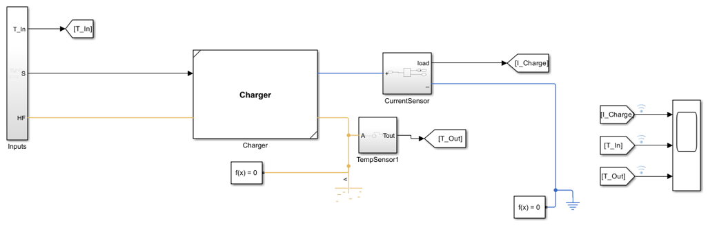
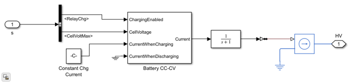

Vehicle Templates
Vehicle models — Vehicle configurations select the electrical or thermal charger fidelity.
Onboard charger with electrical, thermal, and lightweight fidelities
Component path: Components / Charger

Onboard charger component for the BEV system model. The charger implements constant-current / constant-voltage (CC-CV) charging control and connects to the HV bus to replenish the battery pack. Multiple fidelity levels cover purely electrical through fully thermal representations, plus lightweight dummy variants for rapid integration testing.
Choose first by thermal boundary and then by available data: Charger for CC-CV electrical behavior, ChargerThermal for converter heat and coolant coupling, and a Dummy variant when the corresponding interface must remain connected before calibrated component data exists.
| Model | Description | Use case | Templates | Documentation & files |
|---|---|---|---|---|
| Charger | CC-CV charging control without thermal dynamics. | Fast charging simulations where thermal effects are not needed, controller algorithm development. | VehicleElectric, VehicleElecAux | Documentation · Parameters |
| ChargerDummy | Minimal stub preserving the port interface without data. | Placeholder for integration testing or when the charger subsystem is not the focus. | VehicleElectric, VehicleElecAux | Documentation · Parameters |
| ChargerThermal | CC-CV with converter heat and coolant jacket coupling. | Charging scenarios where converter temperature and heat rejection to the coolant loop are important. | VehicleElectroThermal | Documentation · Parameters |
| ChargerThermalDummy | Thermal ports preserved with no internal parameter data. | Placeholder when the thermal loop must remain closed but real charger thermal data is unavailable. | VehicleElectroThermal | Documentation · Parameters |
Workflow/Vehicle/RangeEstimation/) — The charger is included in the BEV system model for charge-discharge scenario studies.
Vehicle models — Vehicle configurations select the electrical or thermal charger fidelity.
All fidelities share the same electrical boundary so variants can be exchanged in place. Thermal-capable fidelities (ChargerThermal, ChargerThermalDummy) add the coolant port noted below.
| Port / signal | Direction | Description |
|---|---|---|
| Relay command | Input | Enables charger connection to the HV bus. |
| Battery cell voltage | Input | Feedback for CC-CV transition. |
| Charging state | Input | Charge enable and mode signal from the BMS. |
| Coolant port (thermal fidelities) | Conserving | Thermal-liquid interface for converter cooling. |
| Charging Current | Output | Current delivered to the battery pack. |
| HV Power | Output | Electrical power drawn from the grid. |
| Converter Thermal States (thermal fidelities) | Output | Converter temperature, heat flow to coolant. |
Verify CC-CV charging behavior and thermal coupling under controlled inputs.
Run the maintained Charger test case before integration.
High-Voltage Battery | Battery Management System | Vehicle Templates